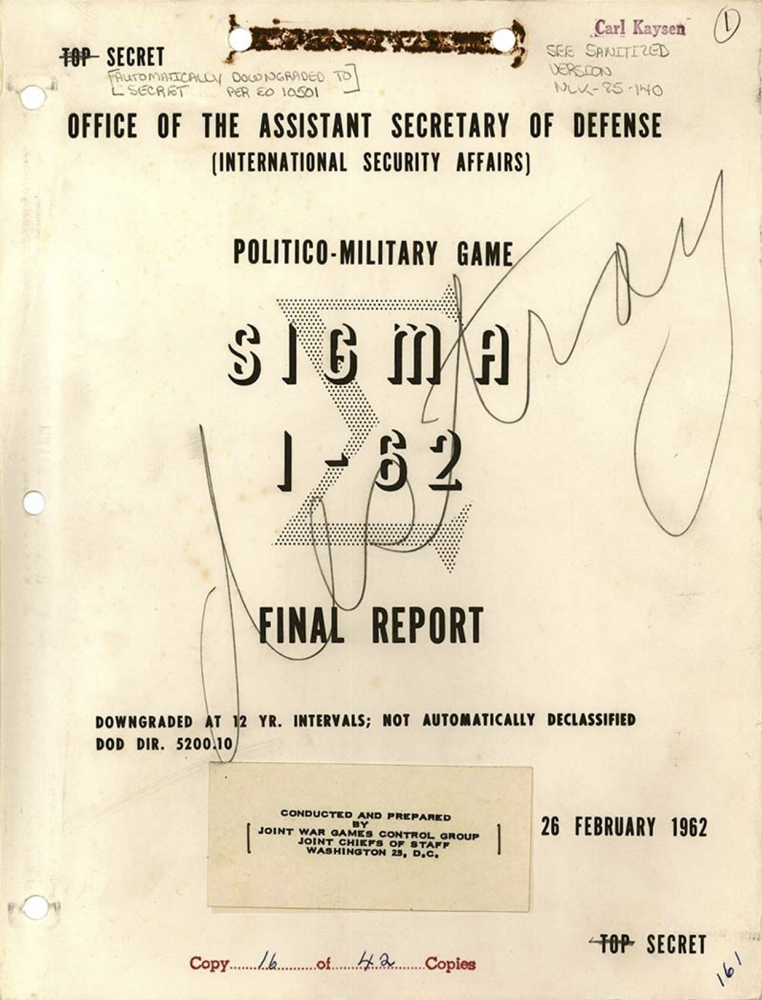

In 1962, a group of senior US officials filed into classified rooms in the basement of the Pentagon. They were assigned roles: the US government, North Vietnam, China, the Soviet Union, the Viet Cong. Each team pursued its own objectives, responded to the others' moves, and watched the scenario unfold across multiple rounds.
The simulation concluded with 500,000 American troops locked in a stalemate, and conscription riots in the streets of US cities. It was 1962. The actual war wouldn't reach that point for another five years.
The Sigma war games[1] ran from 1962 to 1967. Over and over again, across different scenarios, different players, different rule sets, the simulation returned the same result: strategic bombing would fail, the war would drag on, and domestic opinion would collapse. The Marines landed at Da Nang almost exactly when the model said they would. The troop numbers climbed almost exactly as projected.

None of it made it to President Johnson's desk.
Robert McNamara rejected the findings. His objection was revealing: the games placed too much weight on human decision-making, too much on motivation and perception and political will. In his view, human behavior was a variable too soft to trust. He pushed for something more scientific, more computational, where hard numbers replaced judgment calls.[1][2][3] He got his precision. And the US walked into exactly the quagmire the simulation had warned about.
The Mismatch Is the Message
The instinct to dismiss models as "too simplified" is understandable. It's also, in a specific way, backwards.
A friend of mine works in microelectronics engineering. He once told me that his team used complex physics modeling throughout their development process, but never to make decisions directly. The model was too simplified for that, and they knew it. What it was genuinely useful for was something subtler. When it didn't, when the simulation threw up a surprise, that mismatch was the actual finding. It meant something in their mental model was wrong. A missing variable. A misunderstood relationship. An assumption nobody had thought to question.
The simulation wasn't valuable because it was accurate. It was valuable because it was diagnostic.
This is exactly what the Sigma games were doing, and exactly what McNamara missed. The war game wasn't claiming to be a perfect replica of Vietnam. It was a structured way of asking: given what we know about each actor's incentives and likely responses, what happens when we run this forward? The right response wasn't "is this model precise enough?" It was "what is this telling us about our assumptions?"
The Complexity Gap
Human cognition is well-suited to tracking a small number of actors across a small number of variables. We build mental models, update them with new information, and draw conclusions. For most of history, that was enough.
It isn't anymore.
A single geopolitical event today is the output of dozens of actors: governments, central banks, energy blocs, corporations, diaspora populations. Each operating under their own constraints, each responding to what the others do, each capable of producing outcomes that none of them individually intended. The causal chains don't run in sequence. They run in parallel, feed back on themselves, and interact in ways that only become visible after they've already resolved.
This isn't a failure of expertise. The most seasoned people in any room are working with the same cognitive hardware everyone else is. The problem is structural: the system has grown more complex faster than any individual mind can track. Someone with deep expertise in one relationship (US-China trade, or Gulf energy dynamics) will necessarily be modeling the other thirty variables at low resolution. Not because they're not good enough. Because nobody is.
The result is a specific kind of blind spot: you don't know what you don't know. The variable you're not tracking is, by definition, the one you won't see coming.
What You're Actually Looking For
It doesn't give you the future. It gives you a map of the interaction space: what happens when these actors respond to each other under these conditions.
Run it enough times, vary the assumptions, and something useful emerges: not a prediction, but a picture of where your thinking has gaps.
Where does the simulation keep surprising you? That's where your assumptions are wrong. Where do all the runs converge on the same outcome regardless of how you vary the inputs? That's where the structural logic of the situation is stronger than any individual actor's choices. Where do small changes in one actor's behavior produce dramatically different outcomes downstream? That's where the leverage is, and where the risk is hiding.
This is what the Sigma games were producing, round after round, and what went unread. Not a forecast. A stress test. A way of discovering, before the fact, that the mental model you're operating with has a hole in it.
Kriegsspiel Was Never About Replacing Generals
None of this replaces the human in the loop. It couldn't, and it shouldn't try.
Deep domain knowledge isn't replicable by a model. The judgment, the context, the feel for what a particular actor will and won't do under pressure: that lives in people, not in any simulation. What the simulation provides is the connective tissue between those islands of expertise. Someone who knows one piece of the puzzle deeply but is tracking everything else at low resolution now has a structured way to see how those systems interact, and where the interaction produces something no single perspective would have caught alone.
Militaries understood this centuries ago. Kriegsspiel,[3][4] the Prussian war game introduced in 1811 and widely credited with shaping Prussian military dominance through the rest of the century, wasn't designed to produce battle plans. It was designed to train officers to think in systems, to internalize how an adversary responds, to surface the gaps in their own reasoning before those gaps became casualties. One Prussian field marshal, introduced to it in 1824, declared it wasn't a game at all. It was a school of war.
The insight has been there for two hundred years. What's changed is the scale of the problem, and the tools available to meet it. And crucially, the problem itself has long outgrown the battlefield.
This Isn't Just a Military Problem
The same interaction dynamics play out in finance, supply chains, policy, and humanitarian work every single day, at lower temperature but no less consequence.
A central bank raises rates. That changes the calculus for an energy exporter. Which shifts the political pressure on a government trying to hold a currency peg. Which ripples into the bond market of a country on the other side of the world. No single person is tracking all four of those relationships simultaneously at depth, but all four are connected, and the connection is where the surprise lives.
An investor trying to position a portfolio ahead of a policy shift, a corporation mapping supply chain fragility before it becomes a crisis, an NGO trying to pre-position resources before a displacement wave peaks: none of these are war problems. All of them are interaction problems. All of them involve actors with different incentives responding to each other in ways that compound and surprise.
The question the Sigma games were asking in the basement of the Pentagon is the same question a fund manager, a supply chain strategist, or a policy team should be asking today: not "what will Actor A do?" but "what happens when Actors A, B, C, and D all respond to each other at once, and what does that mean for me, specifically?"
On Black Swans and the Limits of Any Model
There's an obvious objection to everything written above, and it's worth sitting with before dismissing it. All of this assumes you know what to put in the simulation. You pick the actors, you define their incentives, you choose the scenario. But what about the thing you didn't think to include? What about the event that arrives from completely outside the frame, the one that makes every scenario you run look quaint in retrospect?
This is Nassim Taleb's life work.[5] He spent a career arguing that the events that matter most are precisely the ones our models don't see coming, that we build our mental maps from what has already happened, and then act surprised when reality delivers something the map didn't include. That the very act of modeling can create a false sense of coverage, a dangerous confidence that because you've thought about the system, you understand it.
He's right. And anyone building or using a simulation tool should keep that uncomfortable fact close.
No scenario covers everything. The truly dangerous surprises, the ones that reshape the board entirely, are by definition outside the frame of whatever you thought to model. A simulation can't save you from what nobody in the room thought to put in it.
But there's a distinction worth drawing. Taleb's prescription isn't paralysis, it's building for robustness. His argument in Antifragile[6] isn't that you stop trying to understand the system. It's that you stop pretending your understanding is complete, and start asking instead: where am I fragile? Where does a surprise, of whatever kind, break me? That's a different question from "what will happen?" and it's a much more useful one.
That's exactly what running interactions gives you. Not a forecast. A fragility map. You find out where your position, your supply chain, your policy assumption, your portfolio breaks down, not by waiting for reality to run the test, but by running it yourself first, with enough time to do something about it.
You won't catch every Black Swan. But you can spend less of your life being surprised by the interactions you could have seen coming, if only you'd had a structured way to look. The goal isn't omniscience. It's shrinking the space of what you're blindly exposed to, and turning at least some of what felt like fate into something you had a chance to prepare for.
The Question That Hasn't Changed
McNamara had the right question and chose the wrong way to answer it. Every institution that has the tools to think in systems but defaults to single-actor analysis makes the same trade: clarity over completeness, confidence over accuracy. It's easier to ask "what will China do?" than to sit with the discomfort of "what happens when China, the Fed, three energy exporters, and a domestic political crisis all respond to each other simultaneously, and what does that leave me exposed to?"
For a long time, the honest answer was: we don't have a good way to ask that second question systematically. Running it in your head means losing threads. Running it in a room full of people means politics, groupthink, and someone telling everyone the model is biased.
Something has changed.
Large language models can now be configured to reason as specific actors with defined goals, constraints, histories, and decision rules. Not as a chatbot answering questions, but as an agent pursuing objectives, responding to pressure, making moves. And when you put several of those agents in the same environment and let them interact, each one responding to what the others do across multiple rounds, something genuinely interesting starts to happen. Behavior emerges that none of the individual actors would have produced alone. Surprises surface. Assumptions get stress-tested not by a human poking at them, but by the logic of the interactions themselves.[7]
This is not a solved problem. Getting agents to reason faithfully as complex geopolitical actors, to respond to each other in ways that reflect real incentive structures rather than plausible-sounding noise is hard, and anyone who tells you it's easy hasn't tried it seriously. But the gap between where the technology is today and where it needs to be to make this genuinely useful is smaller than it has ever been. And it is closing fast.
The Sigma games needed forty-five staff members, weeks of preparation, and a room full of senior officials willing to spend days playing out a scenario. That was the cost of thinking in systems in 1964. The infrastructure required to do something equivalent, faster, continuously, at scale, and translated into decisions you can actually act on, now fits in a laptop.
McNamara's mistake wasn't that he had the wrong tools. It was that he had the right question and chose the wrong way to answer it.
The question of what happens when all these actors respond to each other, and what that means for you, hasn't changed. The tools to answer it finally have.
We're building something. More soon.